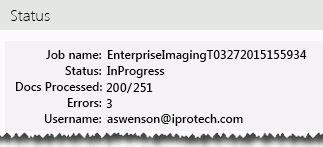

To create and add images to your Eclipse case:
Get started:
Review
the Understanding
Start Eclipse and log in as an Eclipse administrator.
Open the case for which image files are being created.
In the Case
View pane, click Case Administration,
then
Define the imaging job as described in the following table.
|
Option |
Description |
|
|
Output Options |
||
|
Imaging Set |
Select the saved search containing the documents to be processed. |
|
|---|---|---|
|
Select Mode |
Select one of the following options for importing the image files: |
|
|
Overlay |
Select to add new images (for existing and missing images) |
|
|
Overlay Replace |
Select to delete existing images before adding new images (if images exist), or add new images (if images are missing). |
|
|
Color Options |
Select the method by which colors will be processed: |
|
|
|
Black and white (1 bit) |
Renders as Group 4 TIFF1 |
|
|
Grey scale (8 bit) |
Renders as LZW TIFF |
|
|
Color (8 bit) |
Renders as LZW TIFF |
|
|
True color (24 bit) |
Renders a JPG |
|
|
Use eCap project default |
Use the color settings of the selected eCapture project. |
|
|
||
|
eCapture Project |
Select the eCapture project to be used
for the |
|
|
Custom Placeholder Fields |
||
|
Original File Name |
Select the fields containing the Original File Name and Location, to be included in placeholder files for documents with no associated native files. |
|
|
Original File Location |
||
|
1Color rendering is explained on many public websites. Refer to those resources if you want details on color settings. |
When the imaging job is defined, click Submit. The imaging job is given
a name that includes the date and time and sent to eCapture. Status displays
on the right side of the

When the job completes, evaluate errors as described in the following procedure.